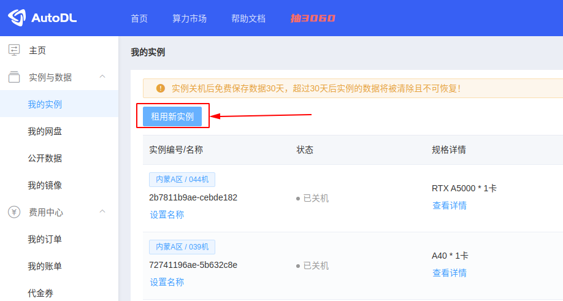
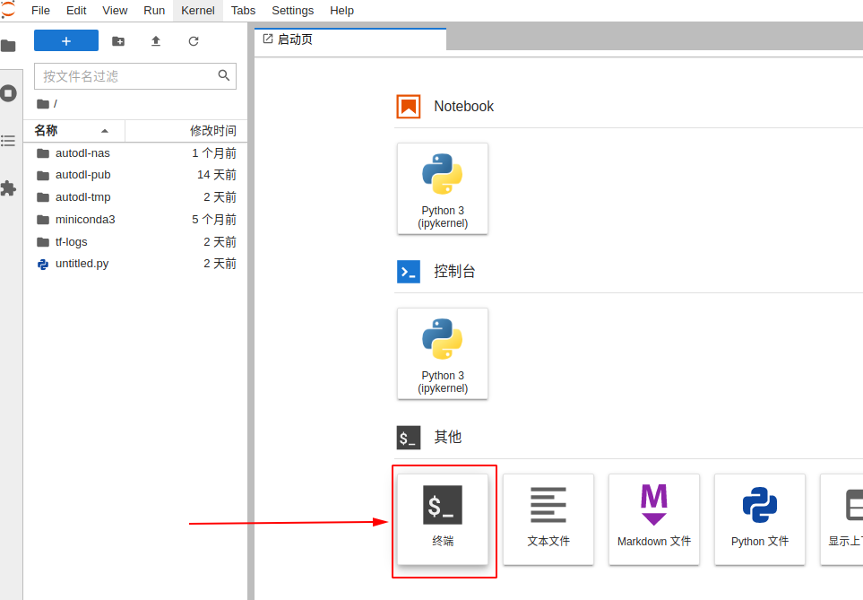

服务器操作笔记 - autodl¶
autodl¶
1 基础常识¶
-
注册学生会员
-
关于实例：实例在则数据在，但是每一个实例只能保存15天，并且这15天内只要实例没有被释放就会每天扣费（不多，但有）
-
如果git clone显示网络问题，启用autodl自带的学术资源加速：
关闭代理：
2 快速开始¶
-
创建实例
注册后进入控制台，在我的实例菜单下，点击租用新实例

在租用实例页面：选择计费方式，选择合适的主机，选择要创建实例中的GPU数量，选择镜像（内置了不同的深度学习框架），最后创建即可

创建完成后等待开机，今后主要用到的操作入口见截图中

-
终端训练
在打开的JupyterLab页面中打开终端，执行您的Python命令等完成训练（建议使用后台训练方式）

-
vscode训练
如果习惯用vscode操作而不是jupyter lab，用vscode remote插件进行ssh连接
3 团队数据管理¶
我们使用阿里云盘作为团队数据管理中心。(1)
-
 aliyun的优点：
aliyun的优点：- 多平台支持, 支持 Windows, macOS, linux(x86/x64/arm), android, iOS 等
- 阿里云盘多用户支持
- 支持文件网盘，相册网盘无缝切换
- 下载网盘内文件, 支持多个文件或目录下载, 支持断点续传和单文件并行下载。支持软链接(符号链接)文件。
- 上传本地文件, 支持多个文件或目录上传，支持排除指定文件夹/文件（正则表达式）功能。支持软链接(符号链接)文件。
- 同步备份功能支持备份本地文件到云盘，备份云盘文件到本地，双向同步备份保持本地文件和网盘文件同步。常用于嵌入式或者NAS等设备，支持docker镜像部署。
- 命令和文件路径输入支持Tab键自动补全
- 支持阿里云ECS环境下使用内网链接上传/下载，速度更快(只支持阿里经典网络，最高可达100MB/s)，还可以节省公网带宽流量(配置transfer_url_type=2即可)
- 支持webdav文件服务，可以将阿里云盘当做webdav文件网盘挂载到Windows, macOS, linux的磁盘中进行使用。webdav部署支持docker镜像，镜像只有不到10MB非常小巧。
- 支持JavaScript插件，你可以按照自己的需要定制上传/下载中关键步骤的行为，最大程度满足自己的个性化需求 在linux中下载aliyunpan
原文链接：https://blog.csdn.net/qq_41174671/article/details/127310715
-
下载与安装
-
登录
refresh token：b69841de9160458da59d7757887b56c0
-
查看命令
非常有用的命令：
help -
下载文件
通过
config set -savedir <savedir>可以自定义下载文件保存的目录。 -
上传文件
例如，一个上传文件命令示例：
开始 - 基础操作¶
Note
free -h : 查看磁盘使用情况
df -h: 查看系统盘、硬盘容量
nvidia-smi
python --version ：检查python版本
python -c "import torch; print(torch.__version__)" : 检查pytorch版本
nvcc --version : 检查cuda版本
0 一般操作¶
-
ssh连接服务器
方法1：在终端输入（环境中已下载ssh）
方法2：使用vscode进行服务器编辑：https://blog.csdn.net/kiong_/article/details/135877723
vscode连接服务器使用ipynb文件的小问题：vscode中 ssh连接服务器后 无法为jupyter文件选择内核kernel
-
如何查看配置
1.基本系统信息
cat /etc/os-releaseuname -r:用于显示当前操作系统使用的内核版本2.CPU信息
lscpu: 命令用于显示详细的CPU架构信息，包括CPU型号、核心数、线程数等。3.内存信息：
free -h: 查看磁盘使用情况4.磁盘信息：
lsblk: 查看分区信息df -h: 查看系统盘、硬盘容量5.显卡信息（训练过程中可以查看显卡占用情况）：
nvidia-smi
1 账户文件、环境查看¶
用 ls -a查看所有文件：
. .bash_history .bashrc .config .ipython .local .python_history .sudo_as_admin_successful
.. .bash_logout .cache .ipynb_checkpoints .jupyter .profile snap .viminfo
.
. 当前文件
..
.. 上一级文件
.bash_history
.bash_history: 这个文件包含了用户在命令行中执行的历史命令记录。每次用户退出登录时，这个文件会被更新。
.bash_logout
.bash_logout: 当用户退出 Bash shell 时，会执行这个文件中的命令。通常用于清理临时文件或执行其他清理任务。
.bashrc
.bashrc: 这是 Bash shell 的配置文件，用于设置用户的个性化命令别名、环境变量以及其他 Bash shell 的行为。
.cache
.cache: 这个目录用于存储应用程序的缓存文件。缓存文件可以提高应用程序的性能，但有时也可能占用大量磁盘空间。
.config
.config: 这个目录通常用于存储用户的应用程序配置文件。许多应用程序会在这个目录下创建子目录来存储它们的配置信息。
.ipython
.ipython: 这个目录包含了 IPython（一个交互式 Python shell）的配置文件和历史记录。
.ipynb_checkpoints
.ipynb_checkpoints: 这个目录是 Jupyter Notebook 自动生成的，用于存储 notebook 文件的检查点版本。这些检查点版本可以用于恢复 notebook 文件的先前状态。（没用）
.jupyter
.jupyter: 这个目录包含了 Jupyter Notebook 的配置文件和相关数据，例如自定义的笔记本模板和扩展。
.local
.local: 这个目录通常用于存储用户的本地安装的程序和数据。例如，用户可以将 Python 包安装到这个目录中，而不是系统范围内安装。
.profile
.profile: 这是用户登录时执行的 Bourne shell 配置文件。它类似于 .bashrc，但适用于 Bourne shell 及其衍生版本，如 Bash。
snap
snap: 这个目录包含了通过 Snap 包管理器安装的应用程序。Snap 是一种打包和分发 Linux 应用程序的方法，它将应用程序和它们的依赖项捆绑在一起。
.python_history
.python_history: 这个文件包含了用户在 Python shell 中执行的历史命令记录，类似于 .bash_history。
.sudo_as_admin_successful
.sudo_as_admin_successful: 这个文件是 sudo 命令生成的，表示上次使用 sudo 命令时身份验证成功。
2 文件读写权限：Permission denied¶
跨账户操作时常遇到。在一个账户时无法打开另一个账户的文件：
解决方法 1 ：使用sudo 命令
解决方法 2 ：使用root身份操作
复制文件夹时，常常会遇到权限问题，使用以下代码改变文件夹所有者
3 账户相关命令¶
# 查看服务器有哪些账户
getent passwd
# 查看当前账户是否具有root权限
sudo -l
# 查看某用户的所有权限
groups username
# 创建账户
sudo adduser newuser
# 给某用户sudo权限
sudo adduser username sudo
4 后台运行管理¶
后台运行ipynb文件：
查看后台、查看指定后台、停止后台
注：ps aux 中 Time 的单位是小时（ 7:23 表示 7h23min）
# 查看所有后台
ps aux
# 查看指定用户后台
ps aux | grep username
# 查看 runipy 字符串后台
ps aux | grep runipy
# 停止某个后台
kill PID
5 系统环境变量¶
pip安装相关包时出现：
并且运行一些命令会找不到。如安装jupyter后运行jupyter notebook ，可能会报错：
解决方法：
1.打开.bashrc，将需要的变量写入系统环境变量中：
2.应用环境变量
6 配置网络¶
-
主要网口："2: enp4s0f0"，打开就可以访问教育网。除lo网口（loop回环）外，网口均为自动获取ip地址。
-
访问教育网外网方法：
# 进入root账户
sudo -i
# 切换到脚本目录
cd /home/jzhang/bin
# 以文本编辑器打开login文件（没有后缀名）
nano login
# 写入以下内容
curl -X POST https://p.nju.edu.cn/api/portal/v1/login -H "Content-type: application/json" -d '{"username":"统一验证账号","password":"统一验证密码"}'
# Ctrl+W写入Ctrl+X关闭，运行脚本
run ./login
vpn(代理)¶
基本下载与使用¶
使用 clash for linux 为云服务器提供代理
clash for linux github address
-
下载
clash for linux（1）从github上下载
（2）从aliyunpan上下载
-
修改订阅代理URL
在自己订阅的代理网站上获取 subscription URL，粘贴到
.env文件的 clash URL，secret一般不用管 -
使用
clash for linux正常弹窗为：
-
检验环境变量，以及是否开启代理
$ env | grep -E 'http_proxy|https_proxy' http_proxy=http://127.0.0.1:7890 # 下面两个是cmd输出 https_proxy=http://127.0.0.1:7890检查是否代理顺利：
如果不是一直在连接，就可以使用了。
ipynb文件使用¶
首先在cmd中打开代理 proxy_on，然后在第一个单元格加入：
# 在 Jupyter Notebook 中设置代理
import os
os.environ["http_proxy"] = "http://127.0.0.1:7890" # 这几个ip地址设置为上面 env | grep -E 'http_proxy|https_proxy'输出的地址
os.environ["https_proxy"] = "http://127.0.0.1:7890"
os.environ["all_proxy"] = "socks5://127.0.0.1:7890" # 这个可以不要
python文件使用¶
首先在cmd中打开代理 proxy_on，然后在python代码中加入：
import requests
# 配置代理
proxies = {
"http": "http://127.0.0.1:7890",
"https": "http://127.0.0.1:7890",
}
# 测试请求
try:
response = requests.get("https://www.google.com", proxies=proxies)
print("代理测试成功，状态码：", response.status_code)
except Exception as e:
print("代理测试失败：", e)
数据¶
1 上传数据¶
- 公网网盘，直接使用阿里云盘、百度网盘上传下载数据
- JupyterLab上传，和网盘类似，优点简单，但是只支持文件不支持文件夹
- scp命令支持文件和文件夹上传下载，命令行执行
- FileZilla软件支持文件和文件夹，拖拉拽即可上传下载，推荐使用
- XShell软件支持管理SSH连接，而且集成了xftp，支持拖拉拽上传下载文件夹/文件，推荐使用
2 下载数据¶
- JupyterLab可以下载文件，但是不能下载文件夹，好处是简单易用
- 公网网盘，直接使用阿里云盘、百度网盘上传下载数据
- scp命令支持文件和文件夹，由于是命令行执行，上手难度稍高
- FileZilla软件支持文件和文件夹，拖拉拽即可上传下载，推荐使用
环境配置-anaconda¶
1 安装anaconda¶
如果当前服务器没有anaconda，需要下载。
- x86架构
uname -a 查看架构类型
下载压缩包：
解压：
- aarch64架构（华为服务器）
2 设置到系统环境变量¶
打开.bashrc，并添加路径到环境变量
3 创建虚拟环境¶
# 创建（自动继承base所有包）
conda create -n env_name python=3.10.14
# 创建（不继承任何包）
conda create --name env_name python=3.6.8 --no-default-packages
# 激活
conda activate env_name
# 退出
conda deactivate
# 列出环境
conda list
# 删掉环境
conda env remove -n env_name
# 创建环境文件（conda版，pip同样使用。实际上，pip也一样）
conda env export > environment.yml
# 还原环境
conda env create -f environment.yml
4 在jupyter notebook中引用虚拟环境¶
运行jupyter的时候，如果要引用某个conda创建的虚拟，需要添加某个虚拟环境到Kernel，见：
https://zhuanlan.zhihu.com/p/160997771
- 进入虚拟环境（重要）
- 安装ipykernel
- 在ipykernel中添加虚拟环境名称，--name后面对应设置的环境名称
附：ipykernel相关操作
1. 列出已安装的kernel:jupyter kernelspec list，附带每个kernel所在路径
2. 查看制定kernel路径:jupyter kernelspec list | grep my_env
DOCKER¶
1 应用场景¶
使用Docker在轻量应用服务器上搭建应用服务，例如：
-
搭建个人博客或网站，使用Docker可以快速部署Web应用程序，并确保每个环境的一致性。
-
构建开发环境，Docker可以轻松地为每个项目创建一个隔离的环境，确保开发工具和依赖项的一致性。
-
部署数据库服务，例如MySQL、PostgreSQL等，Docker可以简化数据库的安装和配置过程。
2 操作¶
docker ps：查看正在运行的容器。
docker start/stop：启动或停止容器。
docker rm：删除容器。
docker logs：查看容器的日志。
docker exec：在容器内执行命令。